2024 Higher Chemistry - Paper 1 questions
Source: Scottish Qualifications Authority (SQA) / Qualifications Scotland. This is a StemInteract HTML companion, not an official HTML edition. Selectable text is supplied alongside original page images. Use the images or original PDF for equations, powers, fractions, vector notation, tables and diagrams; text extraction cannot fully preserve mathematical layout.
Jump to a question
PDF page 1
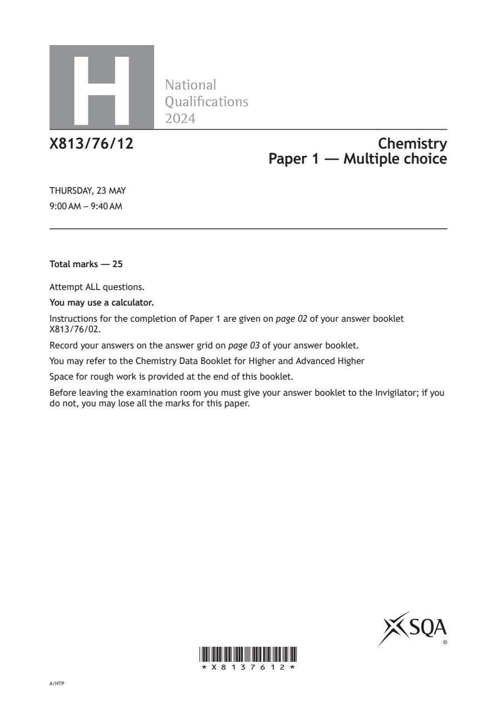
Selectable page text
H
National
Qualications
2024
X813/76/12 Chemistry
Paper 1 — Multiple choice
THURSDAY, 23 MAY
9:00 AM – 9:40 AM
Total marks — 25
Attempt ALL questions.
You may use a calculator.
Instructions for the completion of Paper 1 are given on page 02 of your answer booklet
X813/76/02.
Record your answers on the answer grid on page 03 of your answer booklet.
You may refer to the Chemistry Data Booklet for Higher and Advanced Higher
Space for rough work is provided at the end of this booklet.
Before leaving the examination room you must give your answer booklet to the Invigilator; if you
do not, you may lose all the marks for this paper.
©
*X8137612*
A/HTPPDF page 2
Paper 1, Question 1Paper 1, Question 2Paper 1, Question 3Paper 1, Question 4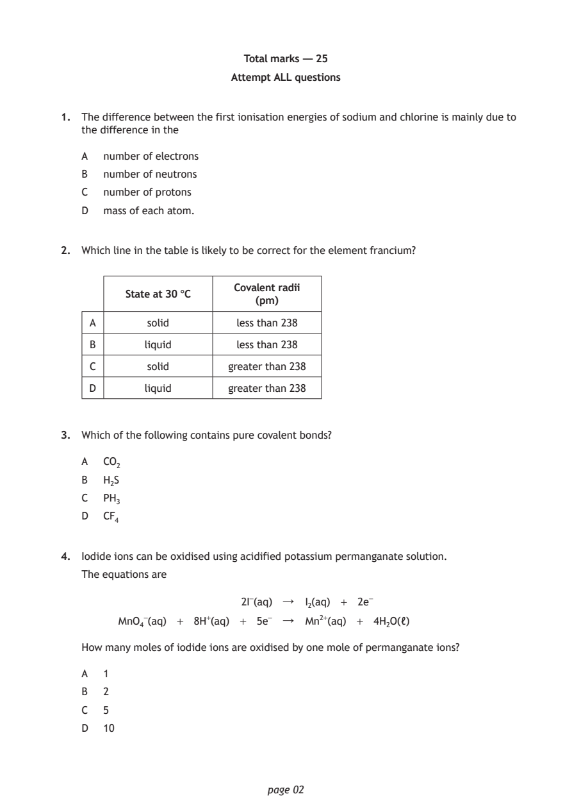
Selectable page text
Total marks — 25
Attempt ALL questions
1. The difference between the first ionisation energies of sodium and chlorine is mainly due to
the difference in the
A number of electrons
B number of neutrons
C number of protons
D mass of each atom.
2. Which line in the table is likely to be correct for the element francium?
Covalent radii
State at 30 °C
(pm)
A solid less than 238
B liquid less than 238
C solid greater than 238
D liquid greater than 238
3. Which of the following contains pure covalent bonds?
A CO₂
B H₂S
C PH₃
D CF₄
4. Iodide ions can be oxidised using acidified potassium permanganate solution.
The equations are
2I⁻(aq) ↓ I₂(aq) + 2e⁻
MnO₄⁻(aq) + 8H⁺(aq) + 5e⁻ ↓ Mn²⁺(aq) + 4H₂O(ℓ)
How many moles of iodide ions are oxidised by one mole of permanganate ions?
A 1
B 2
C 5
D 10
page 02PDF page 3
Paper 1, Question 5Paper 1, Question 6Paper 1, Question 7Paper 1, Question 8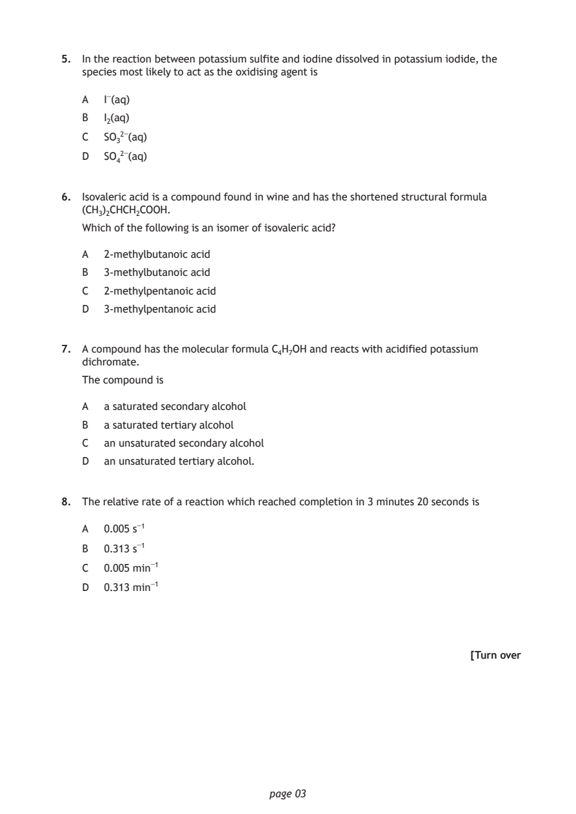
Selectable page text
5. In the reaction between potassium sulfite and iodine dissolved in potassium iodide, the
species most likely to act as the oxidising agent is
A I⁻(aq)
B I₂(aq)
C SO₃²⁻(aq)
D SO₄²⁻(aq)
6. Isovaleric acid is a compound found in wine and has the shortened structural formula
(CH₃)₂CHCH₂COOH.
Which of the following is an isomer of isovaleric acid?
A 2-methylbutanoic acid
B 3-methylbutanoic acid
C 2-methylpentanoic acid
D 3-methylpentanoic acid
7. A compound has the molecular formula C₄H₇OH and reacts with acidified potassium
dichromate.
The compound is
A a saturated secondary alcohol
B a saturated tertiary alcohol
C an unsaturated secondary alcohol
D an unsaturated tertiary alcohol.
8. The relative rate of a reaction which reached completion in 3 minutes 20 seconds is
A 0.005 s⁻¹
B 0.313 s⁻¹
C 0.005 min⁻¹
D 0.313 min⁻¹
[Turn over
page 03PDF page 4
Paper 1, Question 9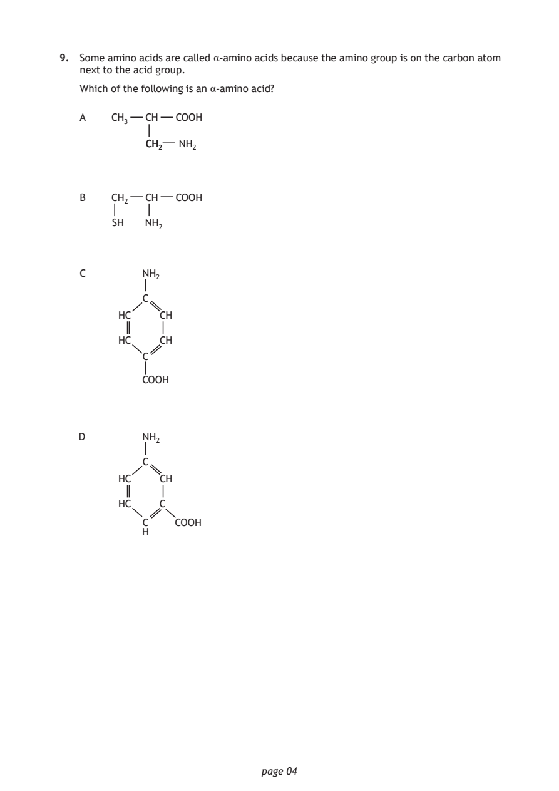
Selectable page text
9. Some amino acids are called α-amino acids because the amino group is on the carbon atom
next to the acid group.
Which of the following is an α-amino acid?
A CH₃ CH COOH
CCHH₂₂ NH₂
B CH₂ CH COOH
SH NH₂
C NH₂
C
HC CH
HC CH
C
COOH
D NH₂
C
HC CH
HC C
C COOH
H
page 04PDF page 5
Paper 1, Question 10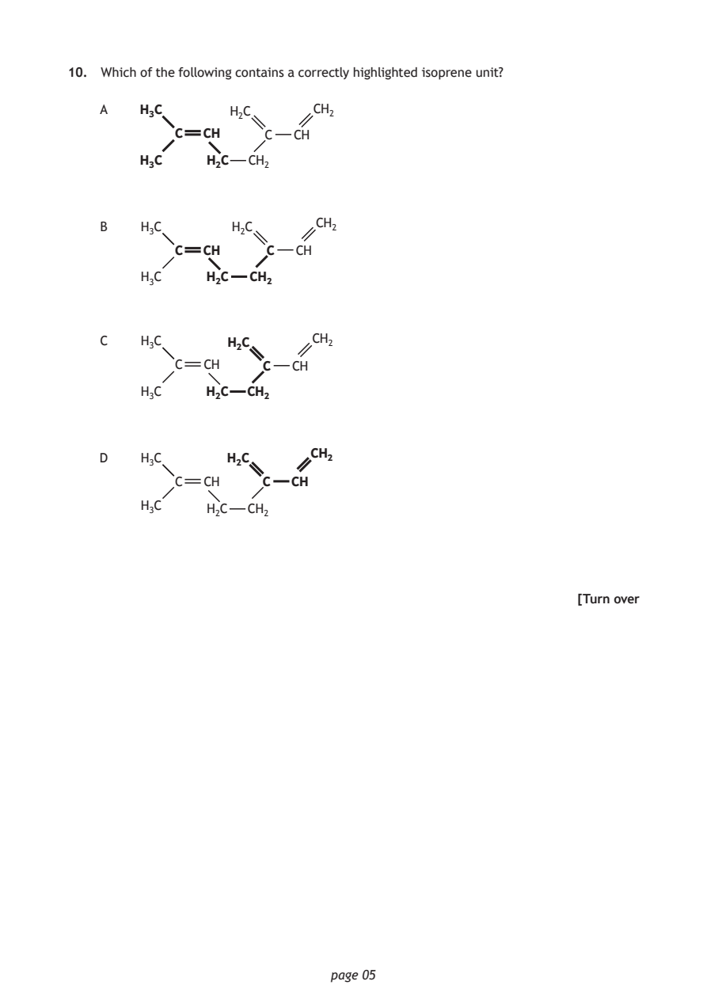
Selectable page text
10. Which of the following contains a correctly highlighted isoprene unit?
A H₃C H₂C CH₂
C CH C CH
H₃C H₂C CH₂
CH₂
B H₃C H₂C
C CH C CH
H₃C H₂C CH₂
C H₃C H₂C CH₂
C CH C CH
H₃C H₂C CH₂
CH₂
D H₃C H₂C
C CH C CH
H₃C H₂C CH₂
[Turn over
page 05PDF page 6
Paper 1, Question 11Paper 1, Question 12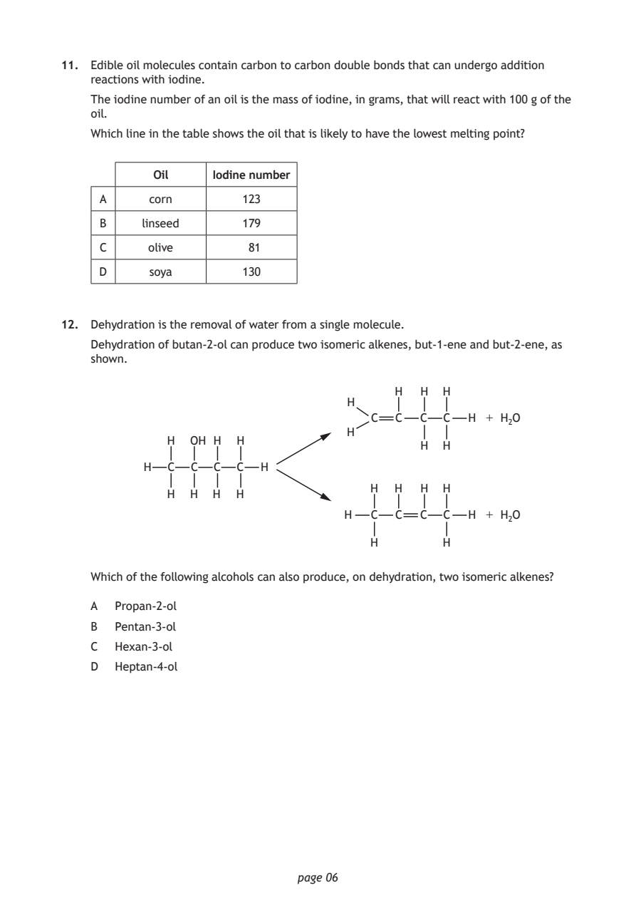
Selectable page text
11. Edible oil molecules contain carbon to carbon double bonds that can undergo addition
reactions with iodine.
The iodine number of an oil is the mass of iodine, in grams, that will react with 100 g of the
oil.
Which line in the table shows the oil that is likely to have the lowest melting point?
Oil Iodine number
A corn 123
B linseed 179
C olive 81
D soya 130
12. Dehydration is the removal of water from a single molecule.
Dehydration of butan-2-ol can produce two isomeric alkenes, but-1-ene and but-2-ene, as
shown.
H H H
H
C C C C H + H₂O
H
H OH H H
H H
H C C C C H
H H H H
H H H H
H C C C C H + H₂O
H H
Which of the following alcohols can also produce, on dehydration, two isomeric alkenes?
A Propan-2-ol
B Pentan-3-ol
C Hexan-3-ol
D Heptan-4-ol
page 06PDF page 7
Paper 1, Question 13Paper 1, Question 14Paper 1, Question 15Paper 1, Question 16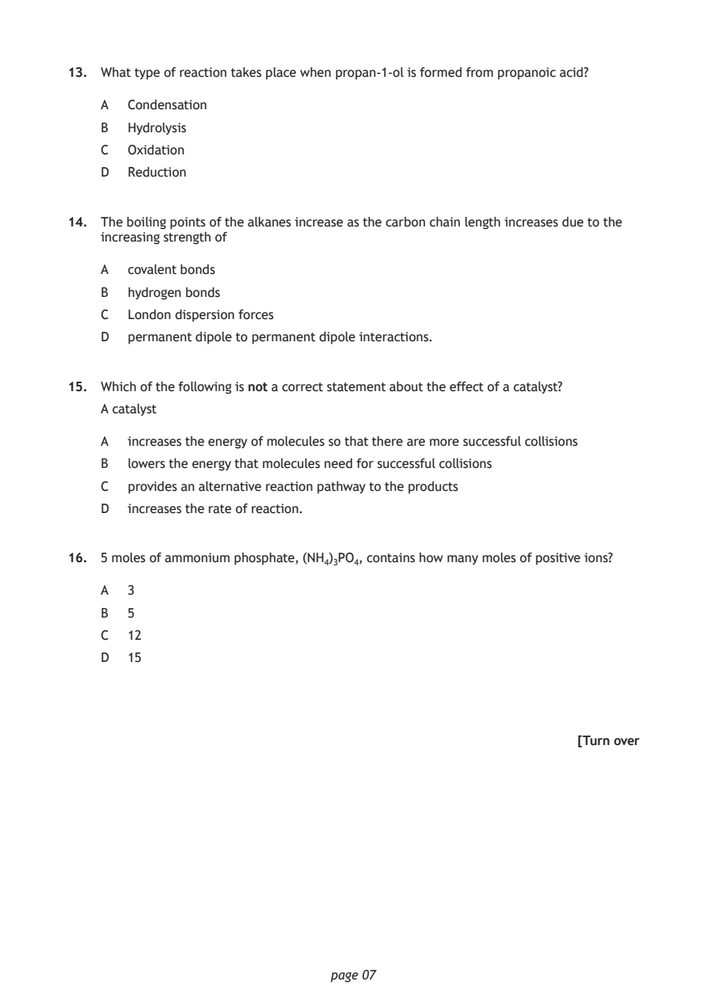
Selectable page text
13. What type of reaction takes place when propan-1-ol is formed from propanoic acid?
A Condensation
B Hydrolysis
C Oxidation
D Reduction
14. The boiling points of the alkanes increase as the carbon chain length increases due to the
increasing strength of
A covalent bonds
B hydrogen bonds
C London dispersion forces
D permanent dipole to permanent dipole interactions.
15. Which of the following is not a correct statement about the effect of a catalyst?
A catalyst
A increases the energy of molecules so that there are more successful collisions
B lowers the energy that molecules need for successful collisions
C provides an alternative reaction pathway to the products
D increases the rate of reaction.
16. 5 moles of ammonium phosphate, (NH₄)₃PO₄, contains how many moles of positive ions?
A 3
B 5
C 12
D 15
[Turn over
page 07PDF page 8
Paper 1, Question 17Paper 1, Question 18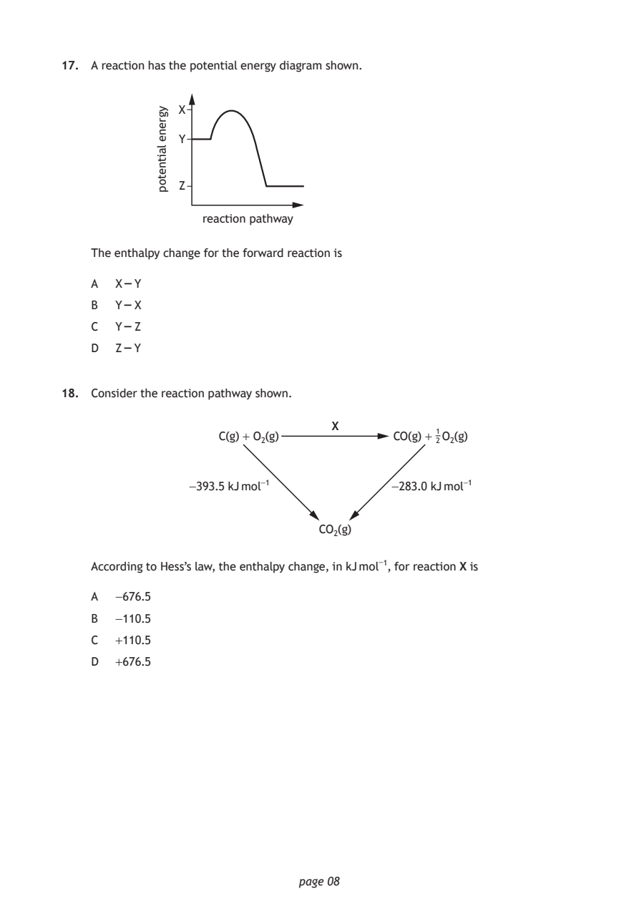
Selectable page text
17. A reaction has the potential energy diagram shown.
reaction pathway
page 08
ygrene
laitnetop
X
Y
Z
The enthalpy change for the forward reaction is
A X – Y
B Y – X
C Y – Z
D Z – Y
18. Consider the reaction pathway shown.
X
C(g) + O₂(g) CO(g) + ¹₂ O₂(g)
−393.5 kJ mol⁻¹ −283.0 kJ mol⁻¹
CO₂(g)
According to Hess’s law, the enthalpy change, in kJ mol⁻¹, for reaction X is
A -676.5
B -110.5
C +110.5
D +676.5PDF page 9
Paper 1, Question 19Paper 1, Question 20Paper 1, Question 21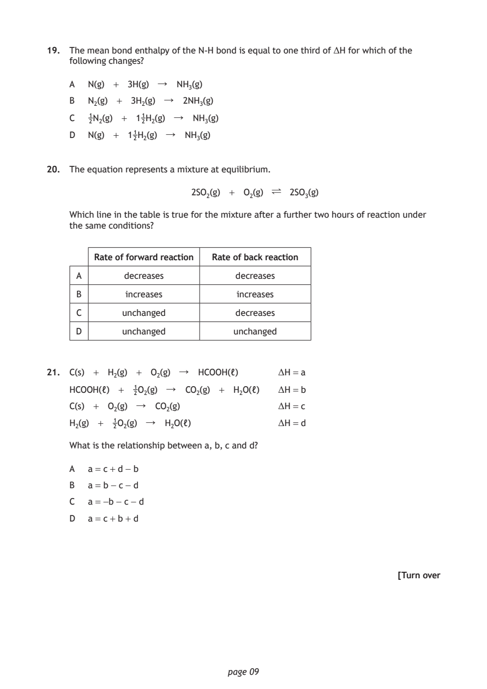
Selectable page text
19. The mean bond enthalpy of the N-H bond is equal to one third of ΔH for which of the
following changes?
A N(g) + 3H(g) ↓ NH₃(g)
B N₂(g) + 3H₂(g) ↓ 2NH₃(g)
C 1N₂(g) + 1₂¹H₂(g) ↓ NH₃(g)
2
D N(g) + 1₂¹H₂(g) ↓ NH₃(g)
20. The equation represents a mixture at equilibrium.
2SO₂(g) + O₂(g) ∏ 2SO₃(g)
Which line in the table is true for the mixture after a further two hours of reaction under
the same conditions?
Rate of forward reaction Rate of back reaction
A decreases decreases
B increases increases
C unchanged decreases
D unchanged unchanged
21. C(s) + H₂(g) + O₂(g) ↓ HCOOH(ℓ) ΔH = a
HCOOH(ℓ) + 1O₂(g) ↓ CO₂(g) + H₂O(ℓ) ΔH = b
2
C(s) + O₂(g) ↓ CO₂(g) ΔH = c
H₂(g) + 1O₂(g) ↓ H₂O(ℓ) ΔH = d
2
What is the relationship between a, b, c and d?
A a = c + d - b
B a = b - c - d
C a = -b - c - d
D a = c + b + d
[Turn over
page 09PDF page 10
Paper 1, Question 22Paper 1, Question 23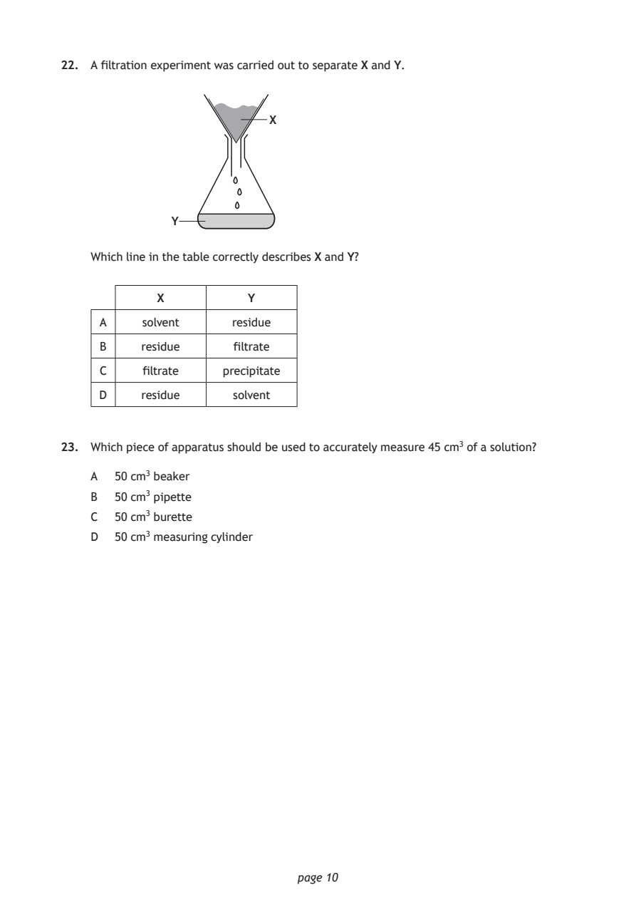
Selectable page text
22. A filtration experiment was carried out to separate X and Y.
X
Y
Which line in the table correctly describes X and Y?
X Y
A solvent residue
B residue filtrate
C filtrate precipitate
D residue solvent
23. Which piece of apparatus should be used to accurately measure 45 cm³ of a solution?
A 50 cm³ beaker
B 50 cm³ pipette
C 50 cm³ burette
D 50 cm³ measuring cylinder
page 10PDF page 11
Paper 1, Question 24Paper 1, Question 25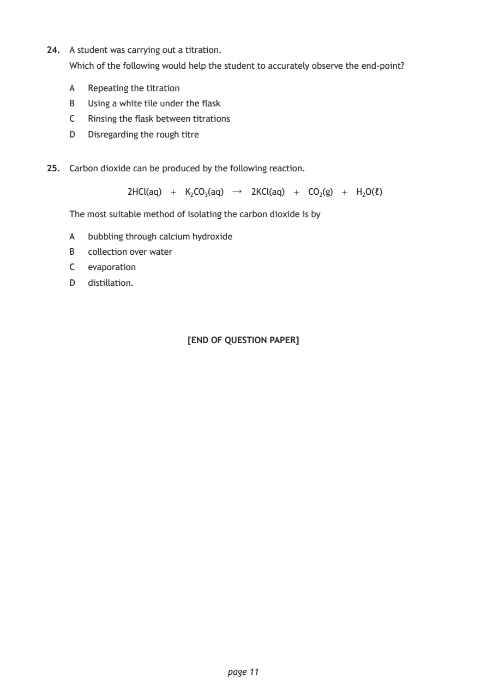
Selectable page text
24. A student was carrying out a titration.
Which of the following would help the student to accurately observe the end-point?
A Repeating the titration
B Using a white tile under the flask
C Rinsing the flask between titrations
D Disregarding the rough titre
25. Carbon dioxide can be produced by the following reaction.
2HCl(aq) + K₂CO₃(aq) ↓ 2KCl(aq) + CO₂(g) + H₂O(ℓ)
The most suitable method of isolating the carbon dioxide is by
A bubbling through calcium hydroxide
B collection over water
C evaporation
D distillation.
[END OF QUESTION PAPER]
page 11PDF page 12

Selectable page text
SPACE FOR ROUGH WORK
page 12PDF page 13

Selectable page text
SPACE FOR ROUGH WORK
page 13PDF page 14

Selectable page text
[BLANK PAGE]
DO NOT WRITE ON THIS PAGE
page 14PDF page 15
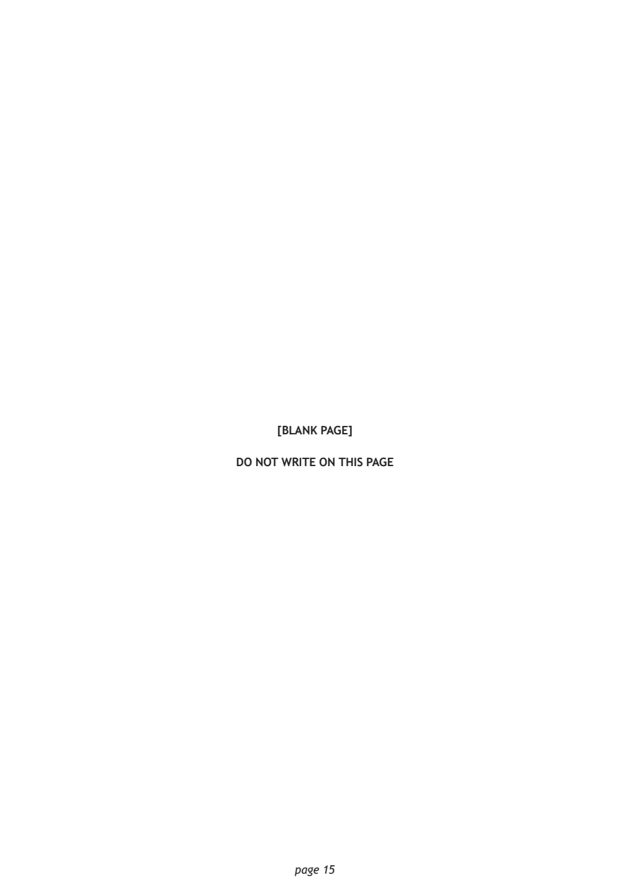
Selectable page text
[BLANK PAGE]
DO NOT WRITE ON THIS PAGE
page 15PDF page 16

Selectable page text
[BLANK PAGE]
DO NOT WRITE ON THIS PAGE
page 16